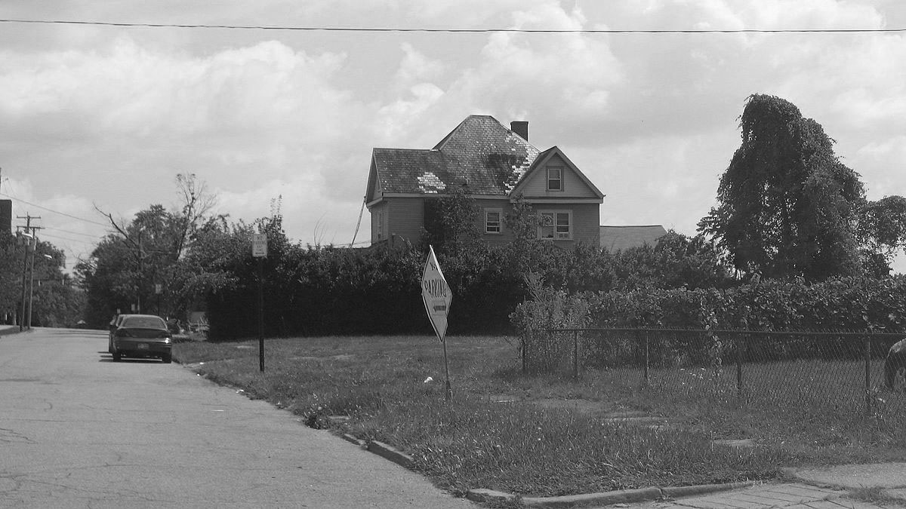
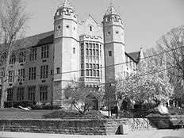
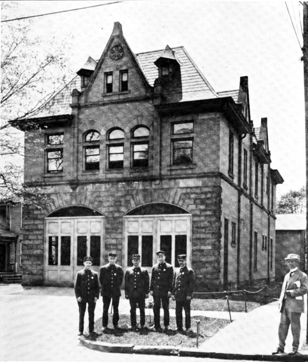
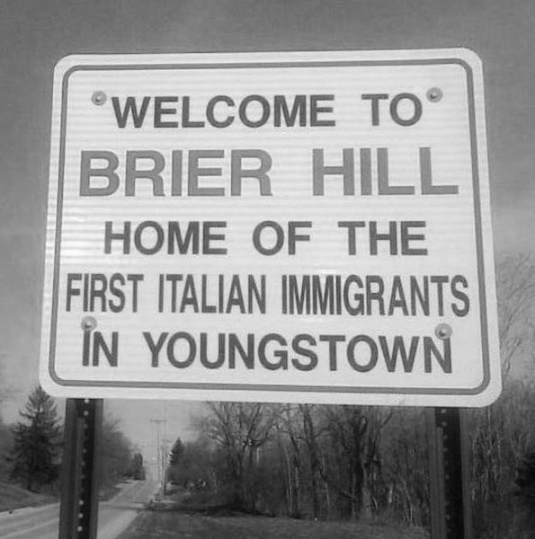
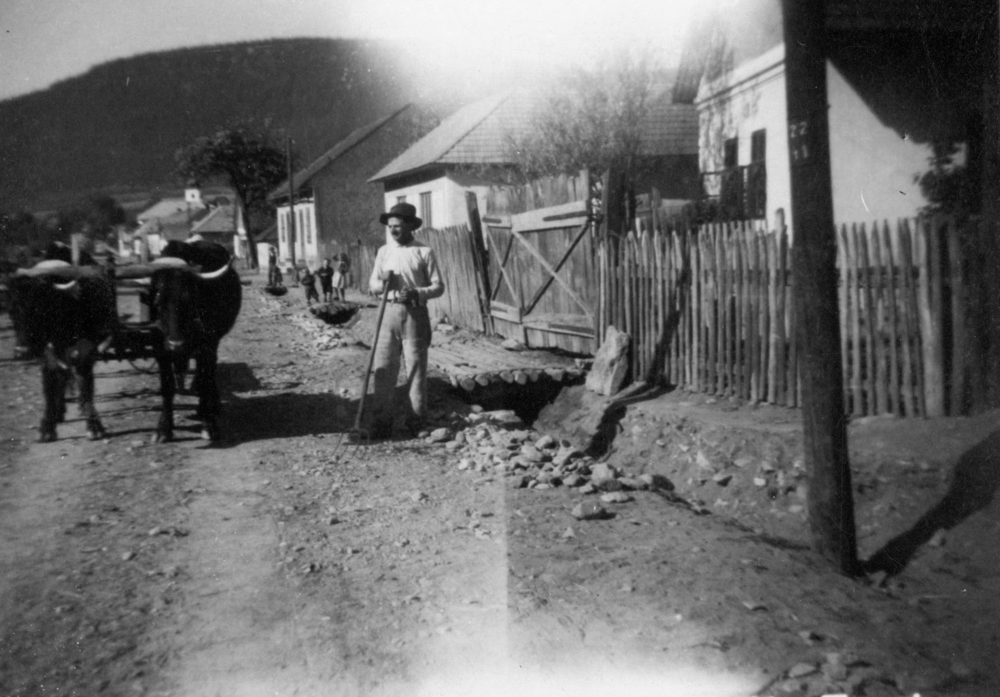
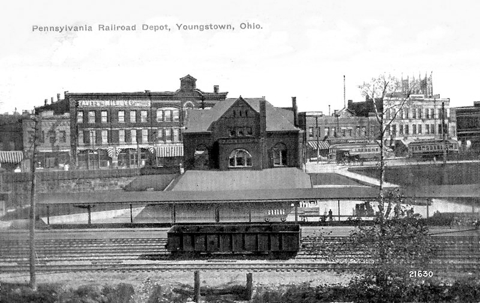
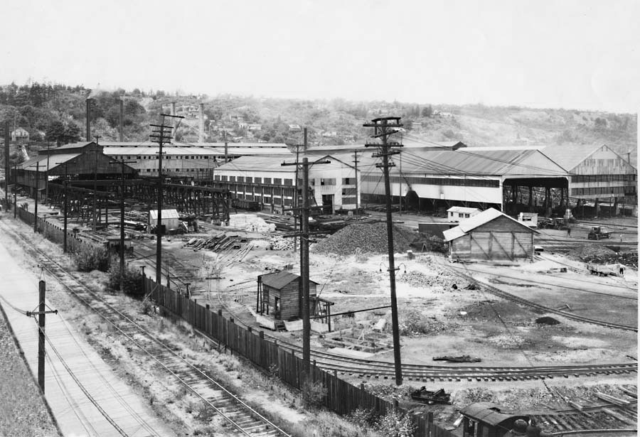
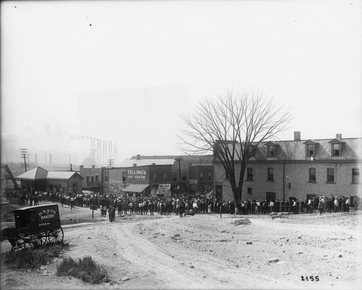
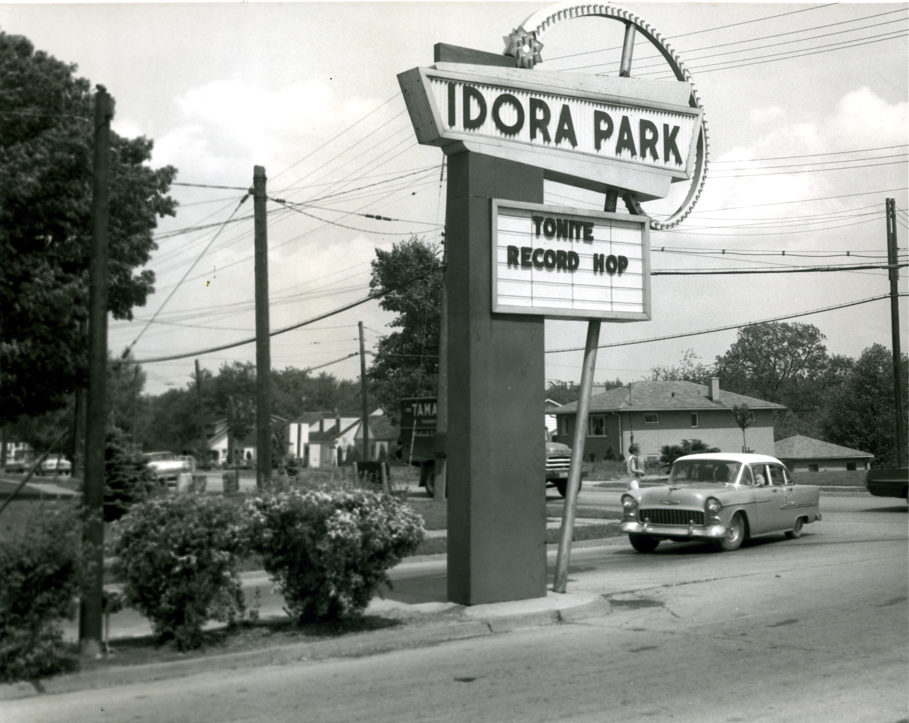

A CITY OF NEIGHBORHOODS
In 2006, the city of Youngstown, Ohio walked away from the most fundamental assumption of economic development and city planning: the idea that a city needs to grow. With a rapidly dwindling population, the city commmited to shrinking by demolishing thousands of empty houses, and offering financial help and moving assistance to those left behind.
However, 11 years later, it is clear the Youngstown has failed to shrink in a smart, organized way, leaving thousands of people in some neighborhoods and dozen in others. This website seeks to preserve the many histories of a city in flux, recognizing the impact of shrinkage on the economic, cultural and social character of Youngstown, once defined by its strong neighborhood identities.
SCROLL THROUGH NEIGHBORHOODS TO LEARN MORE.
DOWNTOWN
 Downtown Youngstown is is the heart and soul of the City and the region.It is here John Young landed and drafted the original plan for Youngstown, and the streets he laid out in 1796 still define the Downtown neighborhood. From this core, Youngstown spread out in all directions, and as it did, it built a true downtown that included some of Americas early skyscrapers as the men that designed New York and Chicago also worked in Youngstown. Th is built environment in the core cannot be duplicated in a sprawl driven suburban economy and provides unique opportunities for redevelopment.metropolitan area.
Downtown Youngstown is is the heart and soul of the City and the region.It is here John Young landed and drafted the original plan for Youngstown, and the streets he laid out in 1796 still define the Downtown neighborhood. From this core, Youngstown spread out in all directions, and as it did, it built a true downtown that included some of Americas early skyscrapers as the men that designed New York and Chicago also worked in Youngstown. Th is built environment in the core cannot be duplicated in a sprawl driven suburban economy and provides unique opportunities for redevelopment.metropolitan area.
Click on Buildings for More Information
ARLINGTON
The Arlington neighborhood grew as a strong working class area with strong Victorian influences. Large boarding houses and smaller single family residences shared a Victorian architectural style was so prevalent that the neighborhoodeventually was listed on the National Inventory of Historic Places as the Arlington Heights Historic District.
Unfortunately designation on its own saves nothing and this asset slipped away as speculation, disinvestment and eventual University expansion led to the almost total removal of the historic structures that made this neighborhood unique.
Click on Buildings for More Information
YOUNGSTOWN STATE UNIVERSITY
The university's origins trace back to 1908, when the local branch of the YMCA established a school of law within the Youngstown Association School. In 1921, the school became known as the Youngstown Institute of Technology and offered its first evening courses. In 1928, a year after establishing the College of Arts and Sciences, the institute once again changed its name to Youngstown College. In 1955, Youngstown College was renamed as Youngstown University, an indication of the school's broadening curriculum. This is currently the most vibrant neighborhood in the city due to city-university partnerships.
Click on Buildings for More Information
WICK PARK
Wick Park, a gift to the City from the family whose name it bears, was designed as an open space with horse trails. It straddled the City’s northern border in 1880 and by 1890 was entirely within the city limits. The area adjacent to the park and on Fifth Avenue north of the park was the domain of Youngstown’s rich and famous.
The trappings of wealth faded with distance from Wick Park and Fifth Avenue. Working class apartments and houses filled in the residential land between Wick Avenue and Elm Street, and along the hillside above Andrews Avenue.
Many residential structures still remain with uses ranging from funeral homes to group homes, while much of the northern extent of Fifth Avenue retains its status with an active upper end real estate market.
Click on Buildings for More Information
BRIER HILL
The Brier Hill neighborhood grew on the homestead of early Youngstown industrialist and Ohio’s Civil War governor, David Tod. Tod’s mines provided coal for his mills and subdivision of his land provided housing for the miners and iron workers that provided muscle for such enterprises. Brier Hill grew as an unincorporated village inside Youngstown Township until it was absorbed by the City in stages between 1880 and 1900.
The rapid expansion of industry was a pull factor for the entire Mahoning Valley and Brier Hill served as an entry point for early immigrants, Welsh, Irish, Italian and African American as they, like the raw materials they processed, coalesced and became the strength of a rapidly growing industrial region. The coal mines that fueled the iron industry are long gone and the old rooming houses are either razed or in various stages of disrepair.
Click on Buildings for More Information
STEELTON
The Steelton neighborhood is the oldest on the West Side and grew with the Ohio Works. The Carnegie Iron and Steel Company (U.S. Steel) built much of the original housing stock to accommodate its growing work force. Much of this turn of the 20th century housing stock still exist in Steelton, and in general is well maintained.
Steelton grew during a period of eastern European immigration to the Mahoning Valley, and this heritage is visible on the built environment. Significant sacred landmarks dot the Steelton neighborhood proudly displaying their Ukrainian, Polish, Russian, Serbian and other ethnic lineages.
Click on Buildings for More Information
MAHONING COMMONS
The Mahoning Commons neighborhood grew up on the relatively narrow fl ood plain on the south side of the Mahoning River. This neighborhood historically was a transportation and small industrial area with residential scattered throughout. It is the home of the City’s original water works, the historic B+O railroad station and the Western Reserve Transit Authority, located on the site of its predecessor, the Youngstown Transit Company.
Click on Buildings for More Information
EAST SIDE
Although Daniel Shehy purchased the entire eastern quadrant of Youngstown Township, the impact of Irish immigration is most visible in the East Side neighborhood. This neighborhood is the historic core of the East Side district, the majority of it coming into the City by 1880, the rest by 1900. Immaculate Conception Church and School, established by Irish Immigrants, still function in the neighborhood, and Irish street names, including Shehy Street, remain.
Settlement in this neighborhood clustered initially on the east side of Crab Creek as residences of workers employed by the mills. Population spread east as industrial development sprawled along the Mahoning River.
Click on Buildings for More Information
SHARON LINE-MCGUFFEY HEIGHTS
 The Sharon Line/McGuffey Heights neighborhood illustrates the impact of transportation links on early neighborhood development. The Sharon line section was literally a creation of the street car line that ran from Youngstown, through Hubbard and to Sharon, Pennsylvania. The line linked the mills in all three locations and allowed for an early version of a flexible labor force.
The Sharon Line/McGuffey Heights neighborhood illustrates the impact of transportation links on early neighborhood development. The Sharon line section was literally a creation of the street car line that ran from Youngstown, through Hubbard and to Sharon, Pennsylvania. The line linked the mills in all three locations and allowed for an early version of a flexible labor force.
The line ran down the middle of Jacobs Road, and the Sharon Line neighborhood spread out from the tracks. Sharon Line grew in a small relatively self suffi cient neighborhood in the midst of the rural East Side.
Click on Buildings for More Information
LOWER GIBSON
Lower Gibson was not constrained by the ridge, but developed along what would become the industrial section of the Mahoning River fl oodplain. Lower Gibson was initially settled on the south bank fl ood plain, but as the mills expanded, worker housing was forced up the relatively steep embankment that is the gentler south east extension of ‘Impassible Ridge’. For the most part, Lower Gibson is now characterized by a mix of new brownfield industrial parks, residual and derelict industry and aging housing clinging to steep hillsides.
Click on Buildings for More Information
LANSINGVILLE
Approximate to Republic Steel’s Youngstown Plant and the Youngstown Sheet and Tube’s Campbell Works, Lansingville began as a mill worker neighborhood as land became scarce in Lower Gibson. Because the neighborhood expanded with the mills, Lansingville came into the City as part of three annexations between 1890 and 1929. Settled during a period of substantial Eastern European immigration, Lansingville developed as a predominantly Slovak ethnic neighborhood. Segments of this ethnic enclave still remain. Lansingville was built out to the city limit during the post World War II housing boom.
Click on Buildings for More Information
ERIE
Erie, unlike Oak Hill, off ered no easy access to the top of the ridge. Th e northern section of the neighborhood became a part of the City just prior to 1900 and the remainder before 1910. The Erie neighborhood contains the area that was once occupied by the coal mining hamlet of Flint Hill, but other than a rail line, most traces of this settlement had faded away before city expansion.
Click on Buildings for More Information
OAK HILL
 Oak Hill or pieces of was the first South Side Neighborhood to be incorporated into the City of Youngstown. Because what is now Oak Hill Avenue off ered the point of least resistance to the top of what was known as ‘Impassable Ridge’ and the relatively fl at land on the South Side, there was early settlement sections adjacent to Mahoning Commons which were in the initial municipal incorporation of 1869.
Oak Hill or pieces of was the first South Side Neighborhood to be incorporated into the City of Youngstown. Because what is now Oak Hill Avenue off ered the point of least resistance to the top of what was known as ‘Impassable Ridge’ and the relatively fl at land on the South Side, there was early settlement sections adjacent to Mahoning Commons which were in the initial municipal incorporation of 1869.
Click on Buildings for More Information
WARREN
Warren grew as a working class neighborhood that infi lled between Market Street and the Idora neighborhood. Th e neighborhood was annexed into the City in two phases between 1890 and 1910 as the regions growing labor force caused residential expansion on the flatland south of the ridge.
Click on Buildings for More Information
IDORA
Idora grew as a trolley line neighborhood adjacent to Mill Creek Park with upper-class residents. Th e Volney Road section of this neighborhood was developed as housing for the wealthy with upper-middle and middle-class housing becoming more prevalent near Glenwood Avenue. Th e neighborhood takes its name from the trolley line that fueled its growth and the amusement park that was at the end of the line. Th e Idora neighborhood became part of the City in 1929.
Click on Buildings for More Information
KIRKMERE
The Kirkmere neighborhood was extensively developed following World War II to fi ll the need for veterans housing. Named after the major arterials that border it, Kirk Road and Meridian Road, and with local streets named after WW II military engagements, this middle class neighborhood remains one of Youngstown’s strongest.
Initially settled along Bears Den Road because of the proximity to Mill Creek and the park, residential development hesitated to take hold in the area until after the coal mines ceased operations. Th e coal mining past still occasionally causes problems with shaft cave-ins, but this neighborhood has become among the most desirable in the City.
The City’s only market rate housing development in recent memory, Castle Court, was constructed off of Canfi eld Road in the late 1990s. The subdivision sold out, a testament to the vibrancy of the Kirkmere area.
Click on Buildings for More Information
SCHENLEY
Early development in this neighborhood began along Mahoning Avenue and spread south. Like Belle Vista, the earliest settlement began at the Mill Creek/Mahoning confl uence. Th e section between Mill Creek and Belle Vista one block south of Mahoning was in the City by 1900, the rest of Schenley was part of the 1929 annexation.
The sections farthest west off of Mahoning have a mix of pre and post war middle class housing. Housing adjacent to Mill Creek Park is more substantial and exhibits a mix of historic and modern structures. Th e Mill Creek Park influence makes this the highest value housing in the Schenley neighborhood.